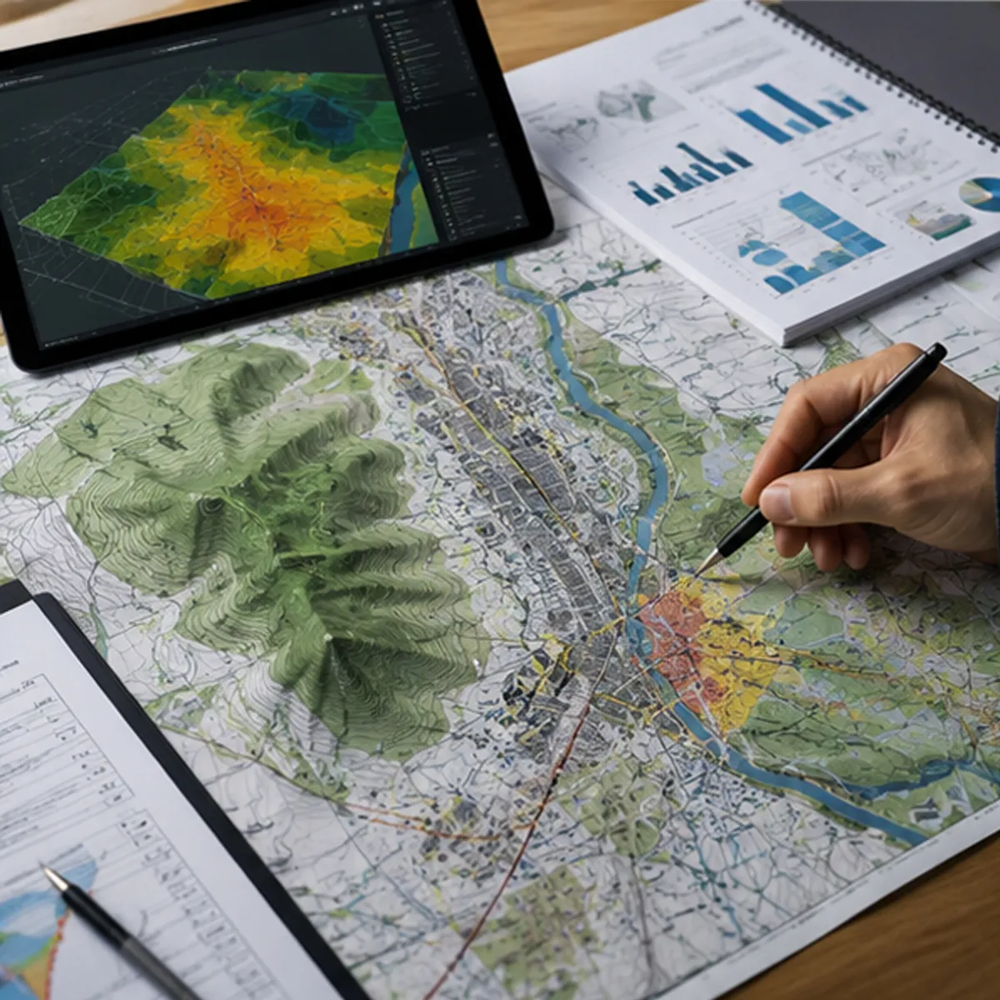
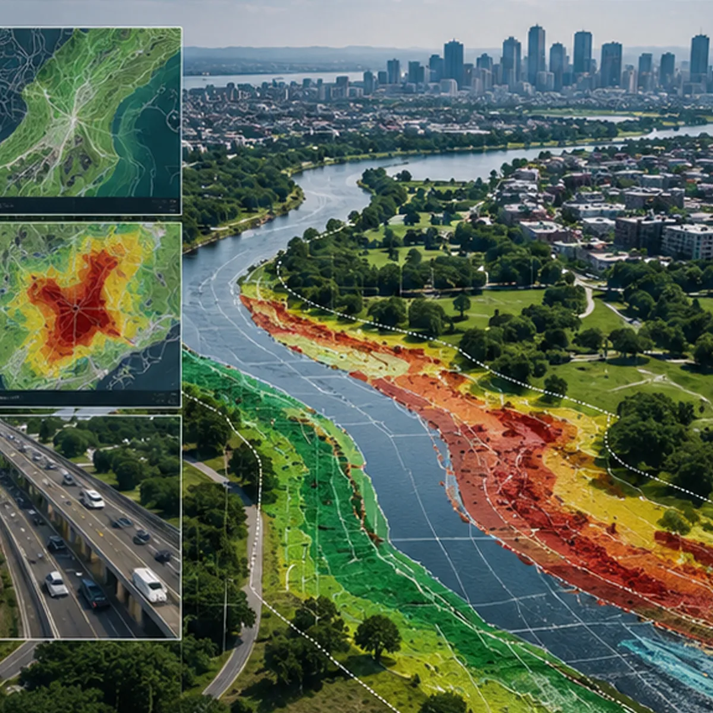

INFRAESTRUCTURA
Planeación estratégica y análisis multicriterio para el desarrollo de proyectos de obra pública de gran escala.
Viabilidad e inteligencia territorial para la infraestructura del futuro
El desarrollo social y económico de la sociedad depende directamente de una infraestructura pública planificada con rigor. Para elevar la calidad de vida de los ciudadanos y asegurar un crecimiento ordenado, es indispensable fundamentar cada obra en estudios técnicos de alta precisión.
En BIG-i desarrollamos soluciones integrales de análisis territorial que determinan la viabilidad técnica, financiera, ambiental y social de proyectos de obra pública, garantizando que cada inversión se traduzca en un beneficio duradero y sostenible.
Diagnósticos de viabilidad, análisis multicriterio y planificación de obra civil
A través del uso avanzado de herramientas de inteligencia artificial, Sistemas de Información Geográfica —SIG— y metodologías de evaluación de proyectos de gran escala, ofrecemos soluciones estratégicas para el ciclo de la infraestructura pública.
Estudios de Viabilidad y Factibilidad Territorial
Análisis espacial y técnico exhaustivo para identificar la localización idónea de proyectos de infraestructura, evaluando restricciones topográficas, tenencia de la tierra y derechos de vía.
Evaluación de Impacto Ambiental, Urbano y de Movilidad
Elaboración de dictámenes técnicos y cartográficos necesarios para mitigar riesgos viales y ambientales, asegurando el cumplimiento estricto del marco regulatorio e institucional.
Análisis de Impacto Socioeconómico y de Beneficio Social
Modelación de variables demográficas y estadísticas georreferenciadas para medir el alcance, cobertura, número de beneficiarios potenciales y retorno social de la inversión.
Optimización y Trazado de Redes de Conectividad
Diseño georreferenciado y optimización de rutas para infraestructura lineal, incluyendo redes hidráulicas, eléctricas, telecomunicaciones y sistemas de transporte masivo.
Soluciones Integrales
Nuestros servicios de consultoría e inteligencia territorial están diseñados para los actores clave involucrados en el financiamiento, diseño y ejecución de la obra pública.
Gobiernos
Soporte técnico a secretarías de infraestructura, obras públicas y planeación para la dictaminación de proyectos prioritarios y asignación presupuestal eficiente.
Empresas Constructoras y Firmas de Ingeniería
Provisión de cartografía base, análisis de sitio y modelos de elevación digital para el diseño y la ejecución de proyectos ejecutivos de obra civil.
Agencias de Transporte y Movilidad
Estudios de factibilidad y modelación geoespacial para la construcción de carreteras, puentes, ciclovías, puertos, aeropuertos y sistemas de transporte público.
Organismos Operadores de Agua y Saneamiento
Planificación territorial para la instalación y ampliación de plantas de tratamiento, presas, acueductos y redes de distribución de agua potable.
Banca de Desarrollo y Fondos de Inversión
Auditorías independientes de viabilidad técnica y territorial —Due Diligence— para la aprobación de créditos, fideicomisos y APP —Asociaciones Público-Privadas—.
Infraestructura Social
Estudios de cobertura espacial y accesibilidad para optimizar la ubicación de nuevos hospitales, centros escolares, parques urbanos y complejos deportivos.
Evidencia Visual
Proyectos, diagnósticos y levantamientos territoriales.



¿Interesado en este estudio?
Acompañamos tu proyecto de infraestructura desde el diagnóstico hasta la supervisión.